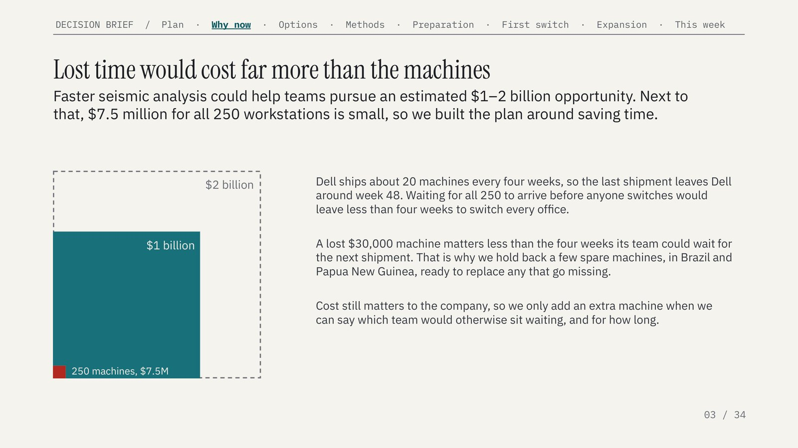
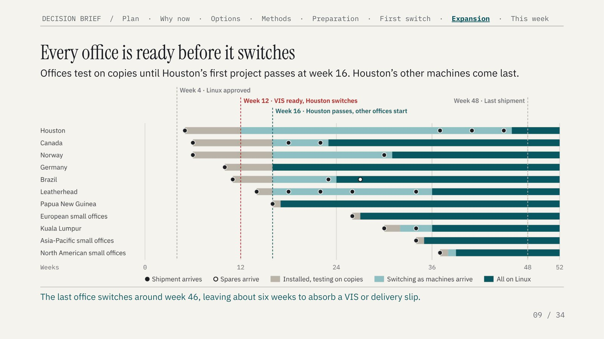
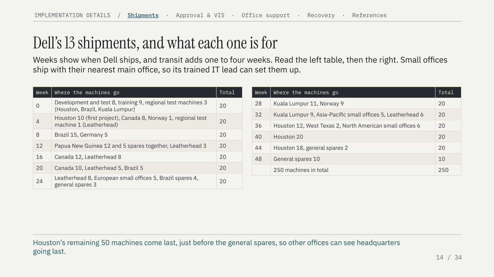
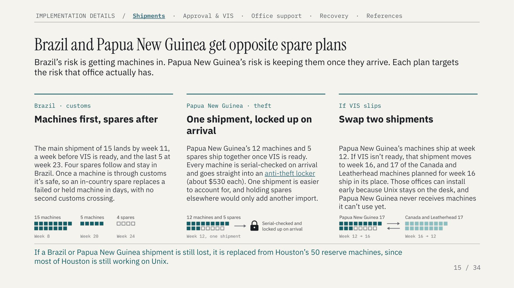
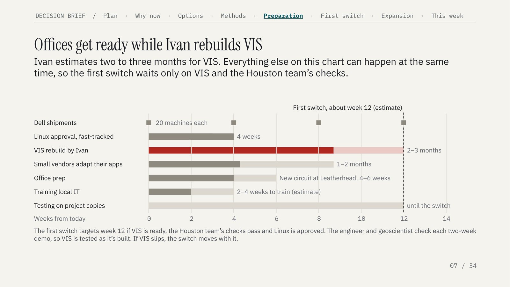
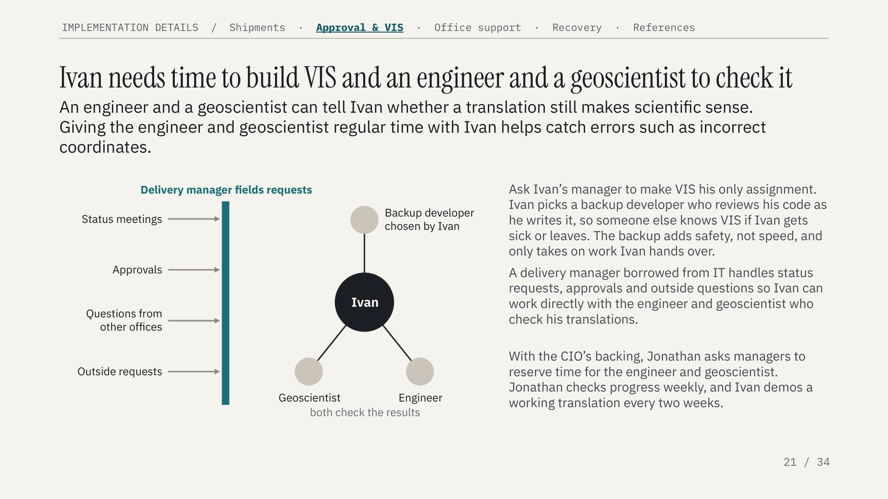
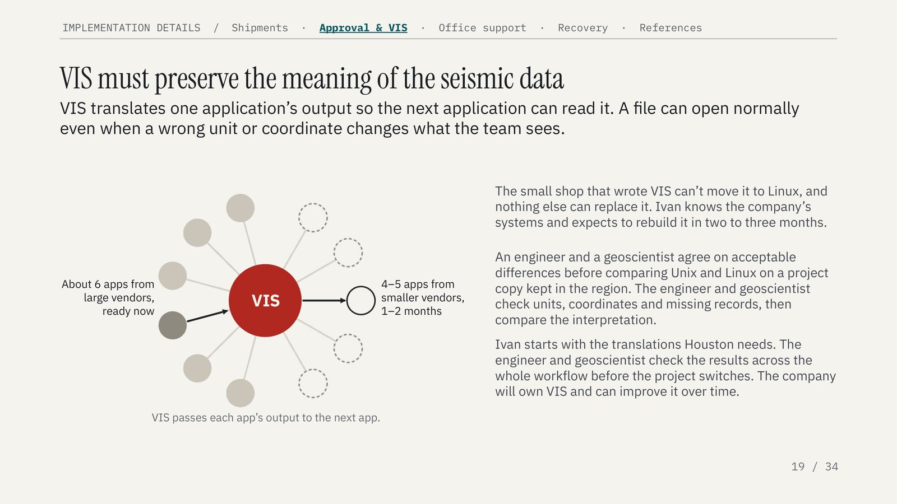
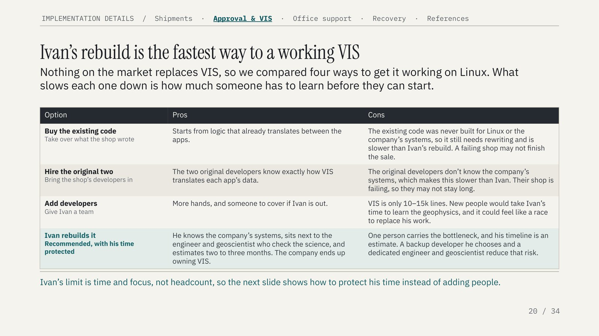
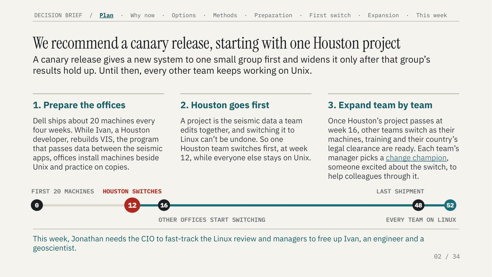

The short version
a two-minute read- The question
- A newly promoted IT lead with no formal authority, played by our professor, had a year to move 250 seismic workstations from Unix to Linux. Dell could ship only 20 machines every four weeks, a key in-house tool had to be rebuilt from scratch, and a project that switched could never switch back. What should he do?
- What we recommended
- A canary release. One Houston project switches first at about week 12, every other office prepares on copies of its data in the meantime, and other teams switch from week 16 once Houston’s project holds up. Each part of the work gets its own method: a waterfall for the Linux approval, short agile rounds for the tool rebuild, the canary for the offices.
- What came out of it
- A 34-slide plan: a ten-slide decision brief, the implementation behind it and an appendix. It scored 152.5 of 160, with 63.5 of 64 for how it was presented. The last office switches around week 46, leaving about six weeks of slack.
- My part
- I owned the plan for VIS, the tool that had to be rebuilt, and how to protect the one developer rebuilding it. I wrote the team’s outline, compared the rollout options, drafted how a switch and a recovery work, made the deck’s charts, and was its main editor.
- 152.5 / 160
- the grade, with 63.5 of 64 for presentation
- 6 months → 4 weeks
- for the Linux approval, by running three reviews at once
- ~6 weeks
- of slack left after the last office switches
01The case
The penguin that went around the world
The case put us in front of Jonathan, an IT lead who had just been promoted and had no authority over the offices he needed to move. Our professor played him, and the only way to learn the facts was to interview him. Each answer could change the plan, and several did.
Leatherhead also needed a new power circuit that takes four to six weeks, and works councils in Germany and Norway had to approve new equipment and overtime. The money settled the priorities early: the machines cost almost nothing next to the prize, so every choice in the plan trades money for time.

02The choice
If a switch can’t be undone, a mistake has to stay small
All four ways of rolling out use the same 250 machines at the same pace. What differs is who goes first and how many projects one failure could reach. I researched these options for the team, and the irreversibility decided it. A big bang waits for every machine and then switches everyone in the last four weeks, so a single fault in VIS would hit every project at once with no way back.
Big bang
wait for all 250, then switch everyoneforOne training push, one switch date.
againstThe last shipment leaves around week 48, and a VIS error reaches every project at once.
Even spread
split every shipment across all officesforEvery office starts learning Linux early.
againstThe riskiest shipments arrive all year, and a VIS error could reach several projects.
Region by region
finish one region, then move onforSupport and legal review focus on one region at a time.
againstOther regions sit idle, and problems like Leatherhead’s power show up late.
Canary
one Houston project first · our pickforA failure stays inside one project, and the riskiest shipments go early.
againstMost Houston teams get their machines last, weeks 37 to 45.
Houston goes first because Ivan sits there, next to the engineers and geoscientists who know the data, so a fault in VIS can be found and fixed fastest. We also matched a method to each stream of work instead of picking one for everything:
The Linux approval
Fixed steps that depend on each other. With the CIO’s backing, IT Architecture, Cybersecurity and Legal review at the same time from one shared package, which cuts about six months to four weeks.
The VIS rebuild
It needs feedback while it is being built. Every two weeks Ivan shows an engineer and a geoscientist a working translation, so errors surface early.
The office rollout
A switch can’t be undone, so one project goes first and the rest wait for its results. We ruled out switching features on and off, because a converted project has nothing to switch back to.
03The plan
Ship and switch separately, and send the risky shipments first
The idea that made the schedule work is that a machine arriving and a project switching are different events. New machines are installed beside the old Unix ones as soon as they arrive, and teams practise on copies of their data, so nothing waits for the approval or for VIS. That is the first of four rules for where each shipment goes. The other three: one Houston project goes first; every other office comes before the rest of Houston, whose 50 machines arrive last as a reserve; and Brazil and Papua New Guinea ship in the first quarter, while a lost or held shipment can still be replaced.
Drag through the year below. Every square is one machine, placed in the week Dell ships it.
Brazil and Papua New Guinea show why the plan treated each risk on its own terms. Brazil’s risk is getting machines in, so its main shipment goes early and its spares follow once the first machines are through customs, because a machine already in the country is safe. Papua New Guinea’s risk is keeping machines once they arrive, so its 12 machines and 5 spares travel together and go straight into anti-theft lockers after a serial-number check. Opposite plans for opposite risks.




04My workstream
How do you set Ivan up to succeed?
That was Jonathan’s own question, and it was the part of the case I took on first. VIS is small, 10 to 15 thousand lines, but the seismic apps pass their data to each other through it, so no project anywhere can switch until it works. The shop that wrote it couldn’t port it to Linux, and Ivan estimated two to three months to rebuild it.
The dangerous bug in a translator isn’t a crash. It’s a file that opens normally with the wrong units in it.
That shaped everything about the plan for Ivan. A wrong coordinate doesn’t throw an error; it quietly changes what a geoscientist sees, and that can’t be caught by looking at a demo. So the checking has to come from people who know what the data should mean. We weighed four ways to get a working VIS:
Buy the existing code
It was never built for Linux or for the company’s systems, so it would still need rewriting, from a shop that might not survive the sale.
Hire the two original developers
They know VIS but not the company’s systems, and their own shop was failing.
Give Ivan a team
Brooks’s law: adding people to a late software project makes it later. New developers would spend Ivan’s time learning the geophysics.
Ivan rebuilds it, with his time protected
He knows the systems, sits next to the people who can check the science, and the company ends up owning VIS. Our recommendation.
Protecting his time meant four concrete things. Managers make VIS his only assignment. A delivery manager borrowed from IT absorbs status meetings, approvals and outside questions. Ivan picks a backup developer who reviews his code as he writes it, so the company isn’t one sick day away from losing VIS; the backup adds safety, not speed. And an engineer and a geoscientist get reserved time to check his translations every two weeks, starting with the ones Houston needs.



05One deck from five people
Keeping 34 slides true while the facts kept moving
Each of us owned a workstream. Teammates sized the offices and planned the shipments, worked out the four-week approval, and built the change management, from change champions in every team to a weekly meeting that rotates between 08:00, 15:00 and 23:00 UTC so every region gets a turn at a sane hour. I wrote the outline those sections hung on, and the section on how a switch and a recovery work: test on a copy in the same region, freeze edits, keep the last Unix version read-only, back up Linux daily, and agree in advance what would pause the rollout.
Then I became the deck’s main editor, which turned out to be the hard part. Every time Jonathan answered a new question, numbers moved in five people’s sections at once, so I merged them into one deck, re-checked every figure against his latest answers, stripped jargon so each slide reads on its own, and made the custom charts: the timelines, the shipment chart and the squares, from the cost comparison on slide 3 to the machine grids. Two of the catches I remember came late. The deck said the last machines would “arrive” at week 48, when 48 is the week Dell ships them. And some wording implied that all of Houston switched at week 12, when it is only one project.

06How it went
The grade, and the professor’s best argument against us
63.5 of 64 for how we presented it
Your decision brief is exactly what an executive needs: a clear recommendation, the cost of lost time against a $1-2 billion prize, the options you weighed with pros and cons, and the one thing Jonathan needs from the CIO this week.
He also singled out matching the method to the work, protecting Ivan’s time instead of adding people, the opposite spare plans and the rotating meeting. And he picked out the squares I made for the deck:
And you know by now how much I LOVE YOUR SQUARES visual. Simple. Compelling. Strategic.
The points he took off are the part I learn the most from:
- “Houston goes first” is risky wording. However well we defended it, it reads as headquarters putting itself first, and the company’s important customers are abroad.
- Houston’s other 50 machines arriving last doesn’t follow as cleanly as the rest. Houston holds the largest share of the prize and can roll out in a week or two once things work, so there may be a way to make its teams productive sooner without headquarters going first.
- Lead with the prize. Our strongest argument, that lost time costs far more than the machines, sat on slide 3. Opening with it would make the recommendation read as the answer to a billion-dollar question, and the title should be about that prize, not the technology.
If I did it again, I would open on the money, call the first step “one pilot project” rather than naming headquarters, and test whether Houston’s later teams could switch alongside the other offices once the pilot passes.
Method notes
facts, decisions and numbers
- Context
- IS 562 Digital Product Management at BYU, team case “The Penguin That Went Around the World”, late October to early November 2026. Five students; the professor played Jonathan and answered questions as the case unfolded.
- Sizing
- 205 machines for offices: Houston 60 (20 engineers plus 40 shared by about 50 geoscientists), Canada 30, Leatherhead 30, Brazil 20, Kuala Lumpur 20, Papua New Guinea 12, Norway 10, Germany 5, West Texas 2, 11 small offices 16. 45 to run the rollout: development and test 8, regional test 4, Houston training lab 9, spares 24 (Brazil 4, Papua New Guinea 5, general 15).
- Schedule
- 13 shipments of 20 at weeks 0 to 48 (the last has 10). Linux approved at week 4, VIS ready and the first Houston project switching at week 12, other offices from week 16, the last office around week 46, deadline week 52. Transit adds one week to Houston and up to four to Papua New Guinea.
- Approval
- From about six months to four weeks: the CIO moves it to the front of the queue and IT Architecture, Cybersecurity and Legal review in parallel from one shared package (business case, technical overview, security evidence, country requirements, test results and risks, owners and deadlines).
- VIS
- 10 to 15 thousand lines; 2 to 3 months for Ivan. Options: buy the code, hire the original two developers, add developers, or Ivan rebuilds it with protected time (chosen). Checks: an engineer and a geoscientist compare units, coordinates and interpretation on a project copy every two weeks.
- Switch and recovery
- Test a copy in the same region, try the usual tasks, compare with Unix, stop edits and switch, back up Linux and test a restore, then approve the next project. The final Unix copy stays read-only. Pause rules are agreed in advance.
- Change
- A change champion in every team, IT leads and champions trained in Houston, ADKAR mapped to concrete actions, anonymous surveys in Kuala Lumpur, a skeptical German engineer choosing a test, and a weekly meeting rotating across 08:00, 15:00 and 23:00 UTC.
- Sources
- The case and lecture slides; Brooks, The Mythical Man-Month; Cagan, Inspired; Google’s Site Reliability Workbook chapter on canarying releases; NIST SP 800-37; Prosci ADKAR.